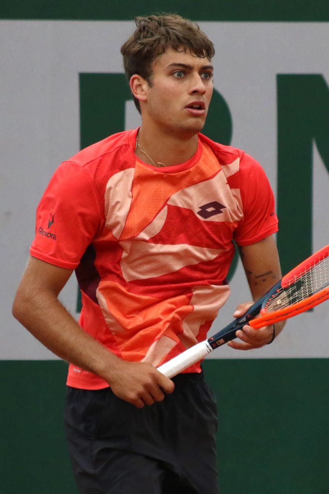

Italy Beat South Korea 2-1 to Reach Davis Cup Semifinals
Matteo Berrettini and Andrea Vavassori won the deciding doubles after world No. 139 Soonwoo Kwon beat Flavio Cobolli.

Three-time defending champion Italy held off South Korea on Wednesday, 25 November 2026, winning 2-1 at BolognaFiere in Bologna to reach the Davis Cup semifinals. Matteo Berrettini and Andrea Vavassori won the deciding doubles rubber against Soonwoo Kwon and Hyeon Chung 7-6 (7-2), 7-6 (13-11), saving four set points in the second set.
Kwon beats French Open finalist Cobolli
Lorenzo Musetti gave the hosts a 1-0 lead. The world No. 27 beat Hong Seong-chan, ranked 787th, 6-0, 7-6 (7-5) in just over 90 minutes, the Korea Herald reported.

South Korea drew level through Kwon, ranked 139th. He came from a set down to beat world No. 7 and 2026 French Open runner-up Flavio Cobolli 3-6, 7-6 (7-3), 7-6 (7-5) in two hours and 50 minutes. Kwon trailed 3-1 in the final tiebreak before winning six of the last eight points.
"He played an unbelievable match from the second set," Cobolli said, according to Tennis Majors. "There is no ranking here, there are only two teams that fight for the same goal."
Doubles decides the tie
Kwon was back on court about 20 minutes after his singles win, partnering Chung, a semifinalist at the 2018 Australian Open. Both teams held serve throughout the first set, and Berrettini and Vavassori took the tiebreak 7-2.

The second set also went to a tiebreak. South Korea had four set points, but the Italians saved all of them and, after the tiebreak reached 11-11, converted their third match point to win 13-11 after one hour and 54 minutes.
"I didn't feel any pressure. I think I really enjoyed playing for the first time in a while," Kwon said afterwards, JKN reported.
Italy's run reaches 15 ties
The win extended Italy's unbeaten run in Davis Cup ties to 15. Captain Filippo Volandri's team play Czechia in the semifinals on Friday, 27 November 2026. Czechia beat Canada 2-0 on Tuesday, the ATP reported.
It was South Korea's first Davis Cup quarterfinal, 66 years after the country first entered the competition in 1960. The South Korean team had no player ranked inside the top 100 in singles or doubles, yet took the hosts to five tiebreaks across the three rubbers.